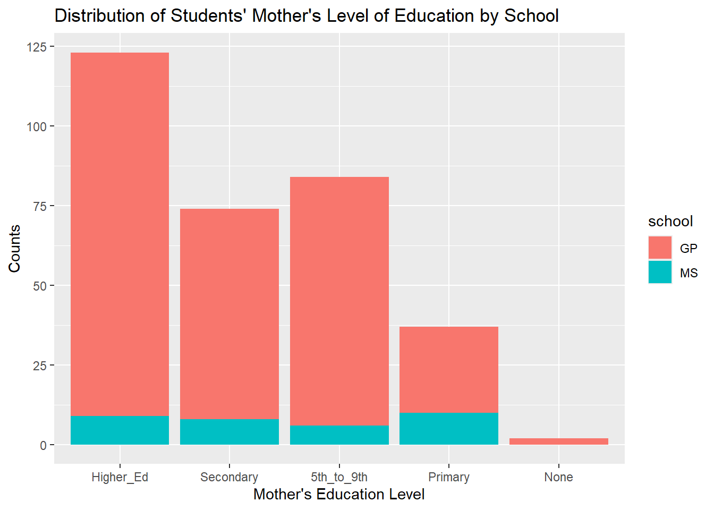
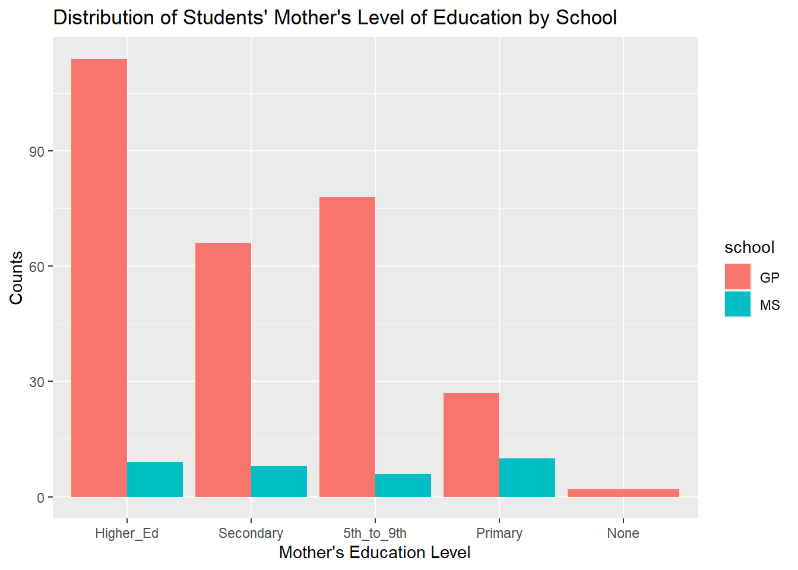

school sex age address famsize Pstatus Medu Fedu Mjob Fjob reason
1 GP F 15 R GT3 T 1 1 at_home other home
2 GP F 15 R GT3 T 1 1 other other reputation
3 GP F 15 R GT3 T 2 2 at_home other reputation
4 GP F 15 R GT3 T 2 4 services health course
5 GP F 15 R GT3 T 3 3 services services reputation
6 GP F 15 R GT3 T 3 4 services health course
nursery internet guardian.x traveltime.x studytime.x failures.x schoolsup.x
1 yes yes mother 2 4 1 yes
2 no yes mother 1 2 2 yes
3 yes no mother 1 1 0 yes
4 yes yes mother 1 3 0 yes
5 yes yes other 2 3 2 no
6 yes yes mother 1 3 0 yes
famsup.x paid.x activities.x higher.x romantic.x famrel.x freetime.x goout.x
1 yes yes yes yes no 3 1 2
2 yes no no yes yes 3 3 4
3 yes yes yes yes no 4 3 1
4 yes yes yes yes no 4 3 2
5 yes yes yes yes yes 4 2 1
6 yes yes yes yes no 4 3 2
Dalc.x Walc.x health.x absences.x G1.x G2.x G3.x guardian.y traveltime.y
1 1 1 1 2 7 10 10 mother 2
2 2 4 5 2 8 6 5 mother 1
3 1 1 2 8 14 13 13 mother 1
4 1 1 5 2 10 9 8 mother 1
5 2 3 3 8 10 10 10 other 2
6 1 1 5 2 12 12 11 mother 1
studytime.y failures.y schoolsup.y famsup.y paid.y activities.y higher.y
1 4 0 yes yes yes yes yes
2 2 0 yes yes no no yes
3 1 0 yes yes no yes yes
4 3 0 yes yes no yes yes
5 3 0 no yes yes yes yes
6 3 0 yes yes no yes yes
romantic.y famrel.y freetime.y goout.y Dalc.y Walc.y health.y absences.y G1.y
1 no 3 1 2 1 1 1 4 13
2 yes 3 3 4 2 4 5 2 13
3 no 4 3 1 1 1 2 8 14
4 no 4 3 2 1 1 5 2 10
5 yes 4 2 1 2 3 3 2 13
6 no 4 3 2 1 1 5 2 11
G2.y G3.y
1 13 13
2 11 11
3 13 12
4 11 10
5 13 13
6 12 12
Second, we read in the data sets separately and then combine them using functions from the tidyverse. We use inner_join() on the variables used in the code from the website
Warning in inner_join(data_mat, data_por, by = c("school", "sex", "age", : Detected an unexpected many-to-many relationship between `x` and `y`.
ℹ Row 79 of `x` matches multiple rows in `y`.
ℹ Row 79 of `y` matches multiple rows in `x`.
ℹ If a many-to-many relationship is expected, set `relationship =
"many-to-many"` to silence this warning.
data_join1
# A tibble: 382 × 53
school sex age address famsize Pstatus Medu Fedu Mjob Fjob reason
<chr> <chr> <dbl> <chr> <chr> <chr> <dbl> <dbl> <chr> <chr> <chr>
1 GP F 18 U GT3 A 4 4 at_home teach… course
2 GP F 17 U GT3 T 1 1 at_home other course
3 GP F 15 U LE3 T 1 1 at_home other other
4 GP F 15 U GT3 T 4 2 health servi… home
5 GP F 16 U GT3 T 3 3 other other home
6 GP M 16 U LE3 T 4 3 services other reput…
7 GP M 16 U LE3 T 2 2 other other home
8 GP F 17 U GT3 A 4 4 other teach… home
9 GP M 15 U LE3 A 3 2 services other home
10 GP M 15 U GT3 T 3 4 other other home
# ℹ 372 more rows
# ℹ 42 more variables: guardian.x <chr>, traveltime.x <dbl>, studytime.x <dbl>,
# failures.x <dbl>, schoolsup.x <chr>, famsup.x <chr>, paid.x <chr>,
# activities.x <chr>, nursery <chr>, higher.x <chr>, internet <chr>,
# romantic.x <chr>, famrel.x <dbl>, freetime.x <dbl>, goout.x <dbl>,
# Dalc.x <dbl>, Walc.x <dbl>, health.x <dbl>, absences.x <dbl>, G1.x <dbl>,
# G2.x <dbl>, G3.x <dbl>, guardian.y <chr>, traveltime.y <dbl>, …
The problem we see is that row 79 of data_mat matches multiple rows of data-por. This means rows won’t be joined in a one-to-one fashion.
Now we do an inner join on the math and portuguese data by all variables except G1, G2, G3, paid, and absences.
data_join2 <-inner_join(data_mat, data_por, by =names(data_mat)[!(names(data_mat) %in%c('G1', 'G2', 'G3', 'paid', 'absences'))])data_join2
# A tibble: 320 × 38
school sex age address famsize Pstatus Medu Fedu Mjob Fjob reason
<chr> <chr> <dbl> <chr> <chr> <chr> <dbl> <dbl> <chr> <chr> <chr>
1 GP F 18 U GT3 A 4 4 at_home teach… course
2 GP F 17 U GT3 T 1 1 at_home other course
3 GP F 15 U GT3 T 4 2 health servi… home
4 GP F 16 U GT3 T 3 3 other other home
5 GP M 16 U LE3 T 4 3 services other reput…
6 GP M 16 U LE3 T 2 2 other other home
7 GP F 17 U GT3 A 4 4 other teach… home
8 GP M 15 U LE3 A 3 2 services other home
9 GP M 15 U GT3 T 3 4 other other home
10 GP F 15 U GT3 T 4 4 teacher health reput…
# ℹ 310 more rows
# ℹ 27 more variables: guardian <chr>, traveltime <dbl>, studytime <dbl>,
# failures <dbl>, schoolsup <chr>, famsup <chr>, paid.x <chr>,
# activities <chr>, nursery <chr>, higher <chr>, internet <chr>,
# romantic <chr>, famrel <dbl>, freetime <dbl>, goout <dbl>, Dalc <dbl>,
# Walc <dbl>, health <dbl>, absences.x <dbl>, G1.x <dbl>, G2.x <dbl>,
# G3.x <dbl>, paid.y <chr>, absences.y <dbl>, G1.y <dbl>, G2.y <dbl>, …
As expected, there are 38 variables. 28 are the matched columns which we specified in the join. The remaining 10 variables comprise the 5 pairs of G1, G2, G3, paid, and absences variables, where one member of a pair is from the math data (those ending in .x) and the other member of the pair is from the portuguese data (those ending in .y).
To complete this task, we choose 4 categorical variables we are interested in and convert these to factors in each of data_mat, data_por, and data_join2 tibbles. We will chose school, sex, Medu, and Mjob as our categorical variables. We also choose names for some of the levels that are more interpretable than the default names.
On the combined data set (data_join2) we look at how the data is stored and document any missing values.
First, to look at how the data is stored, we call the tibble.
data_join2
# A tibble: 320 × 38
school sex age address famsize Pstatus Medu Fedu Mjob Fjob reason
<fct> <fct> <dbl> <chr> <chr> <chr> <fct> <dbl> <fct> <chr> <chr>
1 GP Female 18 U GT3 A Higher_… 4 at_h… teac… course
2 GP Female 17 U GT3 T Primary 1 at_h… other course
3 GP Female 15 U GT3 T Higher_… 2 heal… serv… home
4 GP Female 16 U GT3 T Seconda… 3 other other home
5 GP Male 16 U LE3 T Higher_… 3 serv… other reput…
6 GP Male 16 U LE3 T 5th_to_… 2 other other home
7 GP Female 17 U GT3 A Higher_… 4 other teac… home
8 GP Male 15 U LE3 A Seconda… 2 serv… other home
9 GP Male 15 U GT3 T Seconda… 4 other other home
10 GP Female 15 U GT3 T Higher_… 4 teac… heal… reput…
# ℹ 310 more rows
# ℹ 27 more variables: guardian <chr>, traveltime <dbl>, studytime <dbl>,
# failures <dbl>, schoolsup <chr>, famsup <chr>, paid.x <chr>,
# activities <chr>, nursery <chr>, higher <chr>, internet <chr>,
# romantic <chr>, famrel <dbl>, freetime <dbl>, goout <dbl>, Dalc <dbl>,
# Walc <dbl>, health <dbl>, absences.x <dbl>, G1.x <dbl>, G2.x <dbl>,
# G3.x <dbl>, paid.y <chr>, absences.y <dbl>, G1.y <dbl>, G2.y <dbl>, …
We see our 4 chosen categorical variables from Task 1 are now stored as factors. Several variables are stored as doubles where they would be better represented as characters or factors. An example is Fedu, the father’s level of education. Since this variable takes on one of a small set of possible values, it is better represented as a categorical variable, rather than as a numeric variable as it is stored. Other variables that would be better represented as factors or characters but are stored as doubles include traveltime, studytime, and failures. famrel, freetime, goout, Dalc, Walc, and health are all stored as doubles. These variables take values on a Likert-type scale, which we learned in ST 517 can be treated as numeric or categorical, but the preference in that course was to treat them as categorical. Therefore, these may be better served by being stored as characters or factors. All of the above changes in data types in the tibble could be made with the methods of Task 1. We will not do this here since we are not using these variables in this assignment. Finally, we see the G1, G2, G3, absences, and paid variables (for both .x and .y) are appropriately stored as doubles.
Second, we can check for missing values using base R or tidyverse. First for base R.
Again, we find that there are no missing values in our data.
Next we do some EDA for our categorical variables. We start with a one-way contingency table using school.
table(data_join2$school)
GP MS
287 33
The number 287 in the “GP” row is the number of students who go to the Gabriel Pereira school. From the output we see that far more students are in the “GP” school than in the “MS” school (287 vs. 33, respectively).
Now we do a two-way contingency table using school and Medu.
table(data_join2$school, data_join2$Medu)
Higher_Ed Secondary 5th_to_9th Primary None
GP 114 66 78 27 2
MS 9 8 6 10 0
The number 114 at the intersection of the GP row and Higher_Ed column is the number of students at the “GP” school who had mothers who completed higher education. This number for the “GP” school is higher than for other education levels, suggesting that if a student goes to Gabriel Pereira, then the most likely education level of their mother is higher education.
Next we create a three-way contingency table using school, Medu, and Mjob.
, , = at_home
Higher_Ed Secondary 5th_to_9th Primary None
GP 1 6 17 12 1
MS 1 1 2 3 0
, , = health
Higher_Ed Secondary 5th_to_9th Primary None
GP 24 3 2 1 0
MS 0 0 0 0 0
, , = other
Higher_Ed Secondary 5th_to_9th Primary None
GP 18 33 39 11 1
MS 3 1 3 7 0
, , = services
Higher_Ed Secondary 5th_to_9th Primary None
GP 23 23 20 3 0
MS 0 5 1 0 0
, , = teacher
Higher_Ed Secondary 5th_to_9th Primary None
GP 48 1 0 0 0
MS 5 1 0 0 0
We see from the output that we have a 2 by 5 by 5 array. The number at position [1,1,5] is the number of students at “GP” school whose mothers completed higher education and work as teachers. This number is 48. Examining the rest of the row containing this value, nearly all mothers of students at Gabriel Pereira who work as teachers completed higher education (specifically, all but one).
Now we create a conditional two-way table using table(). We will create a two way table of school and Medu conditioned on Mjob. Specifically, we will condition on mothers job being teacher. We do this conditioning using two methods.
Higher_Ed Secondary 5th_to_9th Primary None
GP 48 1 0 0 0
MS 5 1 0 0 0
We see both methods return the same conditional two-way table. This table shows us that regardless of the school a student attends, if their mother was a teacher, then their mother was likely to have completed higher education.
Now we use dplyr to create a two-way contingency table. We will create the same two-way table we created above. We use the pivot_wider() function from tidyr to make the result look more like the output from table() function.
`summarise()` has grouped output by 'school'. You can override using the
`.groups` argument.
# A tibble: 2 × 6
# Groups: school [2]
school Higher_Ed Secondary `5th_to_9th` Primary None
<fct> <int> <int> <int> <int> <int>
1 GP 114 66 78 27 2
2 MS 9 8 6 10 NA
We see that this is identical to the two-way table for school and Medu created above with the table() function, except that there is an NA where we want a zero. We can easily fix this with the replace_na() function from tidyr package.
`summarise()` has grouped output by 'school'. You can override using the
`.groups` argument.
# A tibble: 2 × 6
# Groups: school [2]
school Higher_Ed Secondary `5th_to_9th` Primary None
<fct> <int> <int> <int> <int> <int>
1 GP 114 66 78 27 2
2 MS 9 8 6 10 0
The final task we will do with categorical data is to create a stacked bar graph and side-by-side bar graph. We will do this with the variables Medu and school.
First we create the stacked bar graph.
data_join2 |>ggplot(aes(Medu)) +geom_bar(aes(fill = school)) +labs(x ='Mother\'s Education Level', y ='Counts', title ='Distribution of Students\' Mother\'s Level of Education by School')

Next we create the side-by-side bar graph. We can use the same code but add a position argument.
data_join2 |>ggplot(aes(Medu)) +geom_bar(aes(fill = school), position ='dodge') +labs(x ='Mother\'s Education Level', y ='Counts', title ='Distribution of Students\' Mother\'s Level of Education by School')

Viewing the plots, we gather a lot of the same information we discussed when creating contingency tables (the numerical summary for categorical data). We can see that the mothers of students at the Gabriel Pereira school have high rates of higher education. Whereas for students at the Mousinho da Silveira school, the distribution of education levels is relatively uniform.
Now it is time for some EDA on numeric variables. The numeric variables are age, absences, and the three test grade variables (G1, G2, and G3) from each data set (math and Portuguese). There are two each for G1, G2, G3, and absences, since there is a math value and a Portuguese value for each variable. There is only one age variable. This gives a total of 9 numeric variables in the data_join2 data set.
First we find measures of center and spread for 3 of these variables. We will use absences.x, absences.y, and G3.x. We will use mean and median as our measures of center, and we will use standard deviation (sd) and interquartile range (IQR) as our measures of spread. We return the desired values in a tibble.
The output suggests that students may have fewer absences and less variability in absences in Portuguese class than in math class. We of course would need to conduct a statistical test to confirm.
We will subset the data to find measures of center and spread for only those students who had at least one absence.
In this subset of students with at least one absence, we again see that students may have fewer absences and less variability in absences in Portuguese class than in math class. Like the un-subsetted case above, we would need a statistical test to confirm.
Next we find the same measures of center and spread for the same variables, but we do so across the grouping variable school.
The mean number of absences in math class appear higher for Gabriel Pereira students than Mousinho da Silveira students, and yet students in Gabriel Pereira have higher mean math scores (G3.x). Again, we need statistical tests to confirm these differences.
Now we find measures of center and spread for the same 3 variables across two grouping variables: school and sex.
It appears from the output that female students at Gabriel Pereira may have lower math scores on average than male students, but that there is no difference in math scores between male and female students at Mousinho da Silveira. Again, we emphasize statistical tests are needed to assess the probability that the observed difference in mean/median test scores is do to sampling variability rather than true population differences.
Next we create a correlation matrix between all the numeric variables.